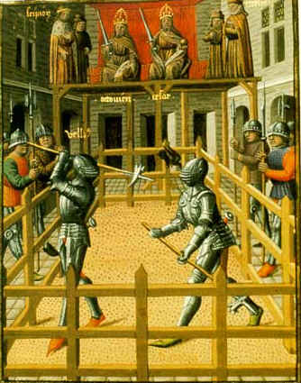

TURNAJ: SOUBOJ I BITVA
Nejrozšířenějším středověkým soubojem v raném středověku byl turnaj. Turnaj znamenal boj rytířských družin seskupených pod praporem bojujících mezi sebou. Vítězstvím získali nejenom slávu, ale i výstroj a výzbroj poraženého. Turnaj se tak podobal skutečné bitvě, ve které proti sobě bojovali rytířské šiky. Hlavně zde bojovali mladí pasovaní rytíři, kteří ještě nezaložili rodinu. Bojovali zde také jak vysocí feudálové, tak i nepasovaní panoši či sergantes, profesionální bojovníci. Týmy byli najímáni za mzdu urozeným mecenášem, např. Jindřich Mladší, či se sestavovali narychlo až na místě. Turnaje se odehrávaly téměř po celý rok v blízkosti městských středisek a byli vyhlašováni vévodou či hrabětem. Turnaj probíhal stejně jako bitva. Začal rozjezdem šiku s kopími a podle okolností se používaly meče,bojová kladiva, sekery a další zbraně. Ve 12.stol. se používali ostré zbraně. Stejně jako že turnaj vypadal jako bitva tak i bitva vypadala jako turnaj, tudíž se snažili jeden druhého zajmout, přičemž byl zájem o toho nejbohatšího. Po Turnaji následovala oslava a vykupování zajatých.
RYTÍŘSTVO
Latinský název miles peditesque se začal objevovat kolem roku 1000 jako název bojovníka na koni povolaného vládcem a již o 30 let později znamená členy společenské vrstvy, kteří mají vyhraněný charakter, zvyklosti a zásady. Ve Francii se nazývají chevalerie a ve Svaté říši římské Ritterstand což znamená rytířstvo, které postupně přijme systém mravních hodnot: statečnost, věrnost, štědrost a na počátku 13. století přibude zdvořilost. Všechny tyto hodnoty spojuje čest. Koncem 12.stol. přibyvá i výra a tak vzniká pojem miles Christi = voják Kristův
Římský meč gladius Řecký meč
